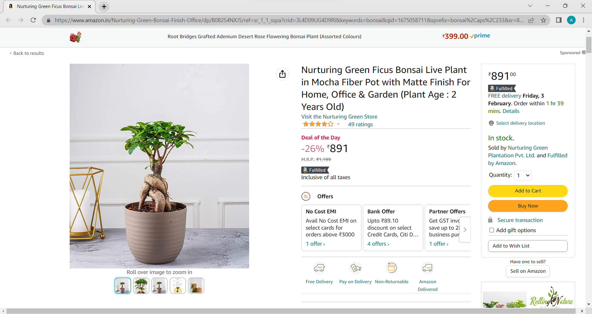

Welcome to our Research section
In our research section you will be able to find the references the we took from other websites. Our development team has taken ideas from various other websites and implemented in their own way. Here are some of the website from which the references were taken.
Reference Website: Caroline Hjerpe
The given website namely Caroline Hjerpe is an alluring and engaging hand jewelry especially ring business based website. This online website engages in the production and trading of well-crafted rings with stones as gifts, souvenirs and so on. The website has a quote coded at the center as an enthusiasm with their products presented below it.
Link to the website
Our Website: Boonsai
The given website compared to ours is equally paraphrased, coded and presented in the terms of visualization with the aim to display magnificent pieces of jewelries in theirs whereas ours aim to have a whole exhibit of our top-selling specimen of bonsai. Also both websites have their words and sequences of humility to present our dedication for our customer's satisfaction. Albeit the similarities, we have also added ratings so as to provide our customers with uttermost delicate and honest reviews from our previous customers.
Reference Website: Doko Recyclers
The presented website named Doko is an environment friendly, waste management website focused on doorstep recycling wastes . This website engages in the views of minimum wasting and maximum waste recycling and also division of non-recyclable wastes in different bins, again to reduce maximum wastes going unmanaged. It also keeps an account of resources and energy saved through their management and influence.
Link to the website
Our Website: Boonsai
The given website compared to ours is again paraphrased, coded and elaborated visually with the aim to present the fanatical affection for bonsai. Compared to Doko, where the aesthetics of the website depended on their movement and their aim of recycling via different bins which can be clearly seen through the first click of it, Boonsai has rather focused on the marketing of bonsai specimen we offer.
Reference Website: Horti Future
The next referenced website Horti Future, a Dutch greenhouse projects based website. Horti Future primarily focuses assistance of flourishing more greenhouses in Netherlands. They provide with different features from technical installations to solar panels addition to even medical projects. They compared to others, keep in mind about the differences in both nature's and budget's condition.
Link to the research-writing-websites
Our Website: Boonsai
The header section, particularly in Boonsai(logo) shares a similarity with Horti Future along with the slider images that accompany to liven up the home page. In comparison, Boonsai has also included the cart feature which in turn keeps a record of the amount of products in the cart.
Reference Website: Amazon

The current referenced website is the world's beloved online ordering website namely Amazon. This website is truly popular among the population especially for trades and transaction. Amazon if not used yet is still popular among the general public.
Link to the website
Our Website: Boonsai
Here, the referenced portion is of a bonsai specimen up for a sale. Side by side comparison and we can see the products display similarities. Boonsai has kept the effort to provide a little sneak peek about the related bonsai to let customers know about what specimen they are diving into. The design has been simplified than that of Amazon, removing some of the features such as zoom in image when rolled over.
Reference Website: My Second Teacher
MST (My Second Teacher) is an educational website preferentially made for active interactions between students and teachers. It provides access to contents and also schedule for the day. It is an interactive educational website for better understanding between teachers and students.
Link to the website
Our Website: Boonsai
The footer section in particular shares the same vibe and visual impact in both MST and Boonsai. While MST devotes the intensive care towards students and teachers; their primary consumers, Boonsai focuses on providing help of identification and general or in-depth knowledge of bonsai specimen and the team alike. The inspiration of the fooer design was used in Boonsai where the company logo is displayed at the left as that of MST and details about the website has been given in similar aspect to the MST website.